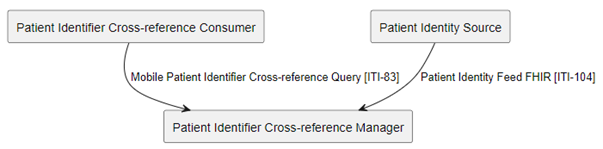
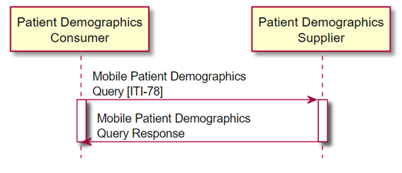
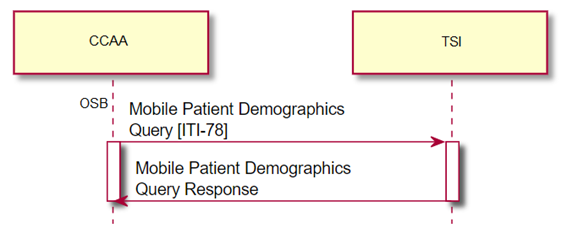
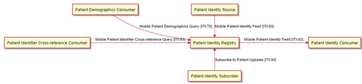

|
Guía de Implementación Tarjeta Sanitaria Individual (TSI)
1.0.0 - R4
Guía de Implementación Tarjeta Sanitaria Individual (TSI) - Local Development build (v1.0.0) built by the FHIR (HL7® FHIR® Standard) Build Tools. See the Directory of published versions
Introducción
| Official URL: http://example.com/fhir/example | Version: 1.0.0 | |||
| Draft as of 2025-01-01 | Computable Name: TarjetaSanitariaIndividualIG | |||
Para la estrategia de evolución de la mensajería existente en TSI al ecosistema FHIR, partiremos inicialmente de especificaciones estándar internacionales que cubren los requisitos de interoperabilidad deseables para un sistema maestro de pacientes.
Para esto, tomaremos como referencia los perfiles de interoperabilidad definidos a nivel de IHE (Integrating the Healthcare Enterprise).
IHE define múltiples perfiles de integración entre sistemas del ámbito sanitario, parte de los cuales se definen según el estándar HL7 FHIR. Cada perfil de integración define distintos roles que deben cumplir los sistemas participantes, así como la mensajería a implementar en función del rol adoptado por el sistema. En IHE, se utiliza el término “transacción” como definición de los distintos mensajes de integración.
En un escenario de gestión de la información de pacientes donde existen múltiples dominios de identificación (caso de TSI con las distintas comunidades autónomas y mutualidades), los perfiles de interoperabilidad IHE relevantes y basados en FHIR son los siguientes:
IHE PIXm (https://profiles.ihe.net/ITI/PIXm/index.html)
Este perfil de integración cubre la gestión centralizada de los distintos identificadores (referencias) que un paciente pueda tener en distintos dominios, definiendo mensajes estándar para la consulta de identificadores, así como la notificación de cambios sobre datos del paciente.
 Bajo este perfil de integración, TSI adoptaría el rol “Patient Identifier Cross-reference Manager”
IHE PDQm (https://profiles.ihe.net/ITI/PDQm/index.html)
Este perfil de integración cubre las consultas de información sobre pacientes en formato FHIR.
 Bajo este perfil de integración, TSI adoptaría el rol “Patient Demographics Supplier”, y las CCAA adoptarían el rol “Patient Demographics Consumer”, como se muestra a continuación:

IHE PMIR (https://profiles.ihe.net/ITI/PMIR/index.html)
PMIR (Patient Master Identity Registry) es otro perfil de integración basado en FHIR que aúna las capacidades de los perfiles PIXm y PDQm, permitiendo la consulta, creación, actualización y eliminación de información sobre los datos de un paciente. Adicionalmente, incorpora un patrón de integración para que otros sistemas externos puedan subscribirse a actualizaciones sobre los datos de pacientes y reciban notificaciones cuando se producen.
 Bajo este perfil de integración, TSI adoptaría el rol de “Patient Identity Registry”.
Bajo este perfil de integración también se encuentra la transacción IHE ITI-94 “Subscribe to Patient Updates”. Éste es un modelo de notificaciones basado en el patrón de publicación / subscripción de los sistemas interesados. La implementación de un modelo de este tipo no implicará de forma obligatoria adaptaciones en los sistemas que están consumiendo los mensajes definidos actualmente. Simplemente dejará preparado al sistema TSI para ser un proveedor de este mecanismo de notificación basado en la especificación FHIR.
Adicionalmente, se tomarán como referencias las especificaciones FHIR disponibles a nivel de servicios europeos en lo que respecta a la búsqueda e identificación de pacientes.